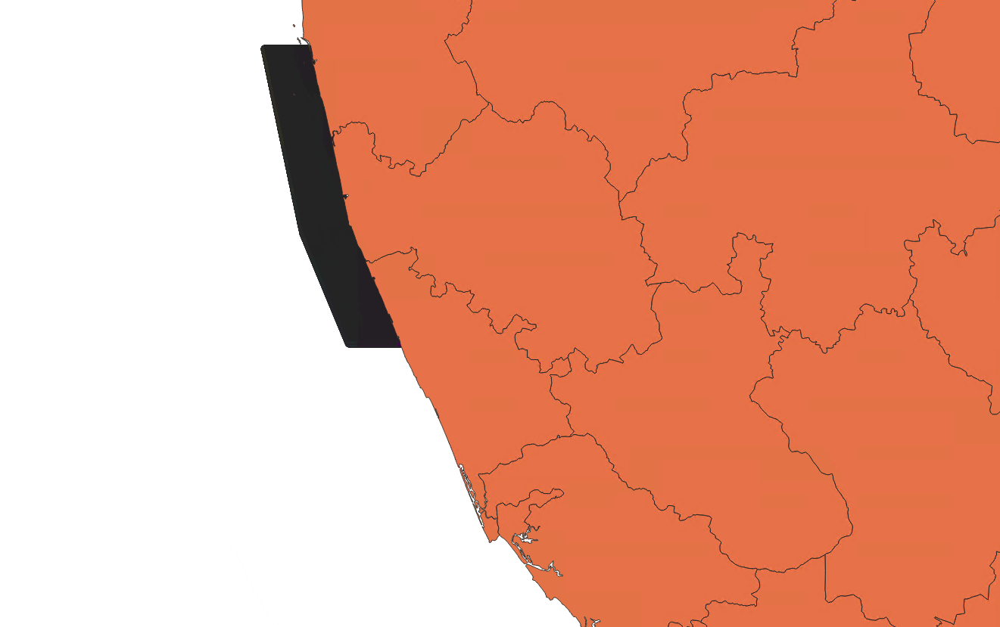
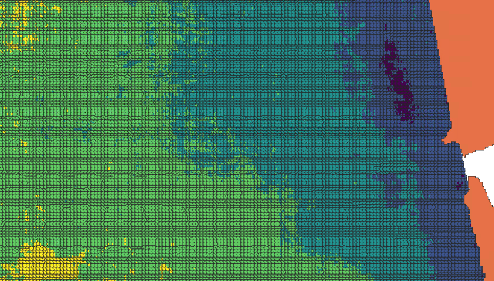

Projects
Prediction of Sea Surface Salinity using Remotely Sensed Images
The main aim of the project is to predict water salinity of a region based on the spectral reflectance of Landsat 8 data. We have carried out the following tasks :
Initially, Landsat 8 data was downloaded from the USGS website. Where each dataset consists of 11 bands. The virtual raster file was created by combining the required bands. Then, we have used Band2 to Band5 inorder to compute spectral indices such as Brightness Index 1, Brightness Index 2, Salinity Index 1, Salinity Index 2, Salinity Index 3, Salinity Index 4, Salinity Index 5, and Salinity Index 6 using the following formulas.
Spectral Indices formula related to salinity
| S.No | Spectral Indices | Formula |
|---|---|---|
| 1 | Brightness Index 1 | √(R2+NIR2) |
| 2 | Brightness Index 2 | √(G2+NIR2) |
| 3 | Salinity Index 1 | √(R*B) |
| 4 | Salinity Index 2 | √(G*B) |
| 5 | Salinity Index 3 | √(R2+G2) |
| 6 | Salinity Index 4 | √(R2+G2+NIR2) |
| 7 | Salinity Index 5 | G*R |
| 8 | Salinity Index 6 | √(G2*NIR2) |
The formulas in the above table are used to calculate the required parameters here R represents red color (band 4) , G represents green color (band 3) , B represents blue color (band 2) and NIR represents the near Infrared (band5) among the 11 bands we have downloaded in Landsat 8 data. Next, each raster calculated file was converted to CSV where we ended up with 8 different CSV files, then those data were merged to a single CSV file. The final file from Landsat 8 data preprocessing includes latitude, longitude, and 8 spectral indices values.
Next, we downloaded corresponding SMOS data from the European Space Agency site and extracted direct salinity values which was represented as Sea Surface Salinity (SSS) along with latitude and longitude in CSV file form. Later for the common locations, spectral indices from Landsat 8 and Sea Surface Salinity(SSS) from SMOS data are combined into a single file in order to make the data Machine Learning ready. During this process, data cleaning is applied to remove null values. Later machine learning models such as Multilinear regression(MLR), Random forest and Random Forest with PCA were applied to predict the water salinity. Based on the models applied we have achieved the following predicted results.
Download the datasetResult Samples
As data is downloaded a sample file is created for area of interest and same is given here.
Based on the salinity assessment results a simple raster file is created as given below.
